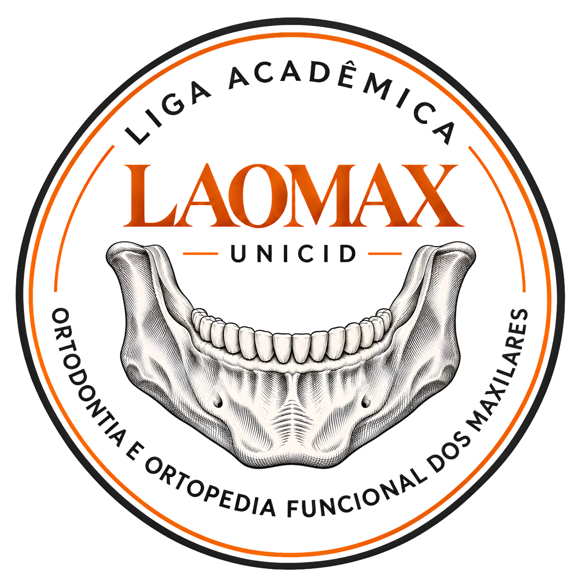
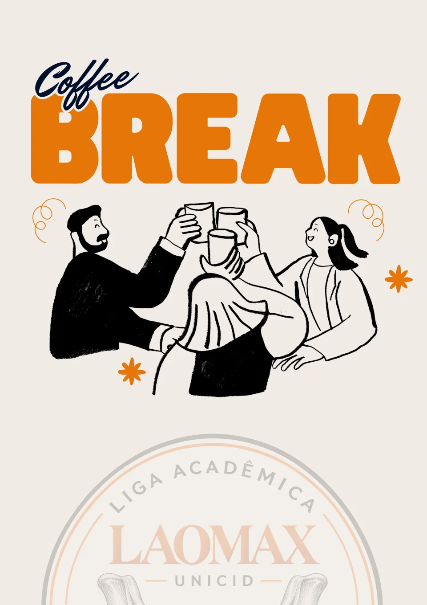

Onde encontrar artigos de Odontologia
PubMed e SciELO: dois pontos de partida para explorar a literatura em Odontologia.
LAOMAX · UNICID
Liga Acadêmica de Ortodontia e Ortopedia Funcional dos Maxilares da UNICID.
Conheça a LAOMAX, explore os materiais de estudo e acompanhe os avisos da liga.

A liga
A LAOMAX é a Liga Acadêmica de Ortodontia e Ortopedia Funcional dos Maxilares da UNICID.
Este é o espaço para conhecer a liga, consultar materiais de apoio ao estudo e encontrar o canal oficial de contato.
Conheça a LAOMAXCaderno acadêmico
PubMed e SciELO: dois pontos de partida para explorar a literatura em Odontologia.
Um roteiro simples para organizar seu fichamento e levar uma discussão melhor para o grupo.
Como combinar conceitos, refinar resultados e guardar uma estratégia de busca.
Guias introdutórios de pesquisa e leitura. Revisão editorial da liga pendente.

Acompanhe a liga
Para avisos, dúvidas sobre participação e propostas de atividades, encontre a LAOMAX no Instagram.
Abrir @laomax_unicid (abre em nova aba)